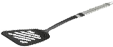

Instructions
Utilisez votre spatule pour retourner les crêpes jusqu'à obtenir une pile ordonnée de la plus grande (en bas) à la plus petite (en haut). La spatule retourne la pile des crêpes dont la base est celle sur laquelle vous cliquez.

Retournements :
Mélanger